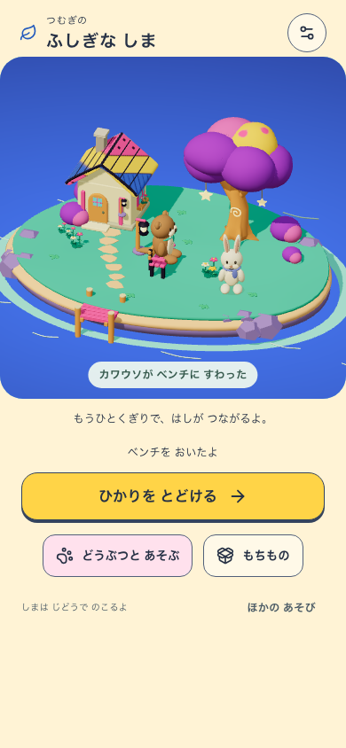
SHA256 75ec2741746f9cbdb86d07730504cf49c9609f491209cbc1d4a7fffacc74c942
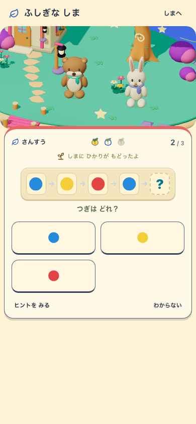
SHA256 bf3351e917dd3353aae3ae13f4b5aec4292d8c62df1ca0643f8b4532b11f973f

SHA256 7cca36764e52e175cb664b2b39e8ed2b0c14417fa4665f4070e87e2fa5a5a753

SHA256 87f377fc97f30899bcbe6362da4e6d7566868613beb5f34dc4180d41a24e84e1
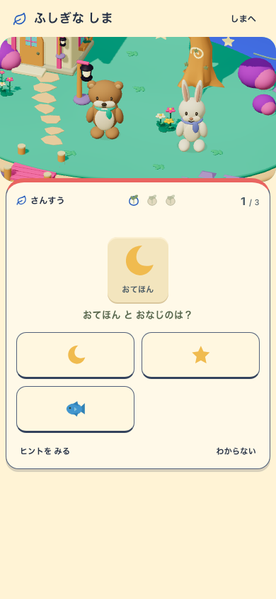
SHA256 bd4f9b573f81b328bd4c48a8630b5d6cb903e6a4bf6fa7e19fa8fa890d201b16

SHA256 e22b99524cf2cb8674a0bead43c1564c66506ecb1ae7a509a9124e4d2ee5321f

SHA256 303f58c7f326f79481219696845fe22c667ea60f379b863dfd2c1bea1ce796f2
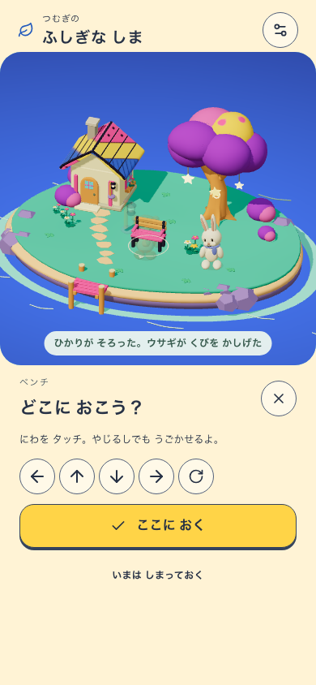
SHA256 fcbb4398bdaa23f6af5d0bad0e2628f74c87a774779c54ada598bac8521d3d2f
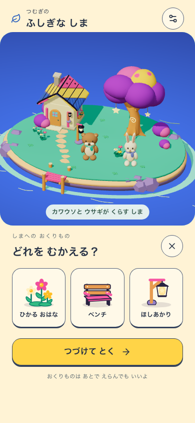
SHA256 5bb847aa142540ccf77e5807aa1b1d4e2eba9c735153da5cf12a72d89081db7a

SHA256 5fb3cccccd21e0db9e1bb5ea52dcd265596cebdc7c078e60185cfe38a4d55d6e
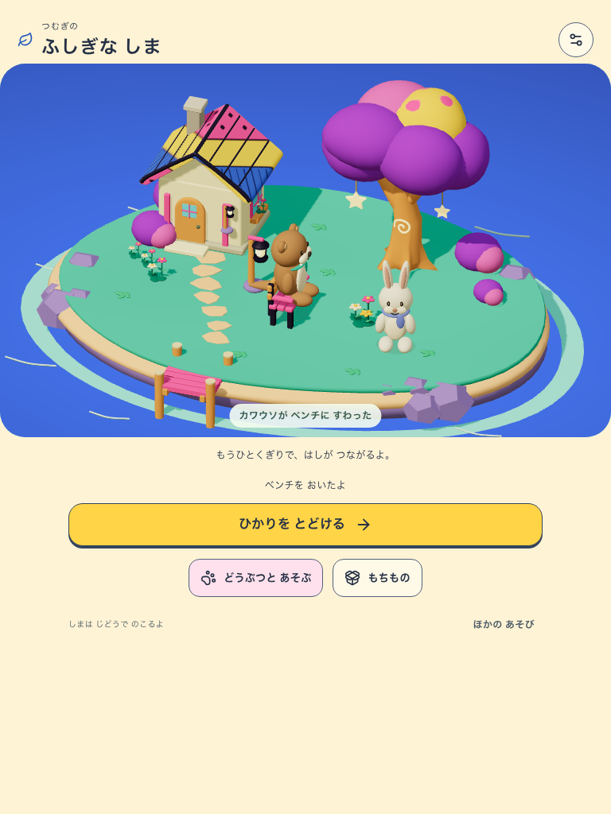
SHA256 97b757a20fe75647b84da77f222b42a277c2d7eb5c4f2d988746d010585c5555
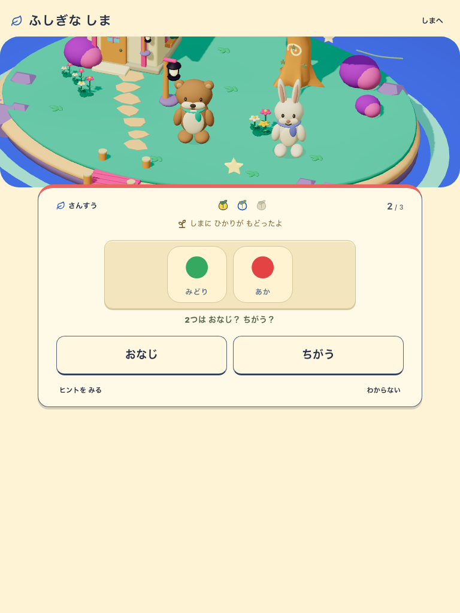
SHA256 ffb3f3e94a5dfe890890e8f28b8df81e18b362783a19a7c4e86e6f01dbed4d1e

SHA256 f6c31e645f156d82939aaf2496aae4a30bb03a670bc380e8b4be35fd8a83f9d7

SHA256 60213c1b15e81d4270bb252eb6961a8b0b616e54362deaa3440ab2b65160d126
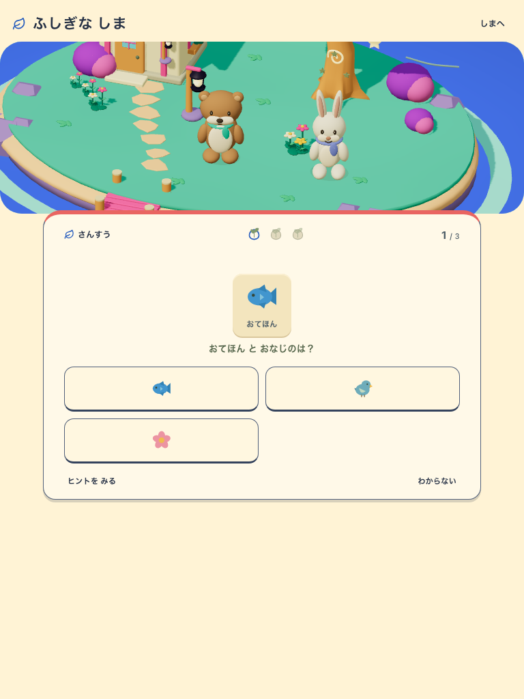
SHA256 c039dfdcf7d2762af1229da1e5472166353f1086c958ba5441b5737a9c190637

SHA256 31adced2f0d7361acef8bcf856a97625d5b063c96719b8c721b2a1e525857df0

SHA256 4fc799ee3fc798a60e3cdcdafb353535cdd0e9695befae5700ac65033074be7e
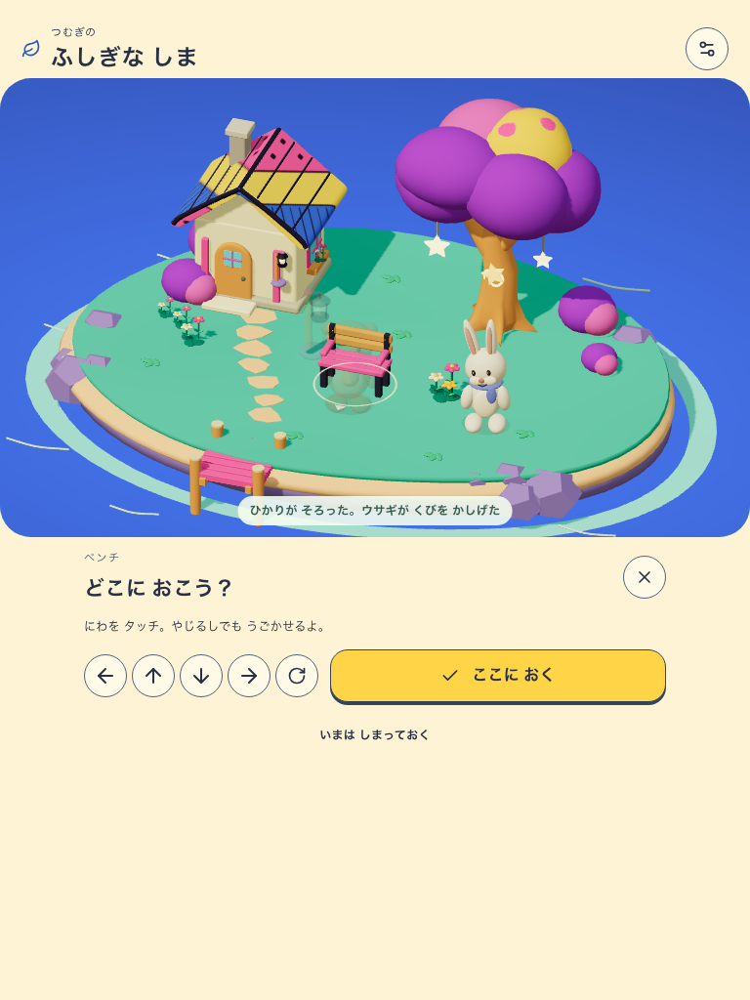
SHA256 0369f8ccfa0b3200f916b14555e3ef9aa170840dcaaeaf42af3cc1e86c8cc4b7
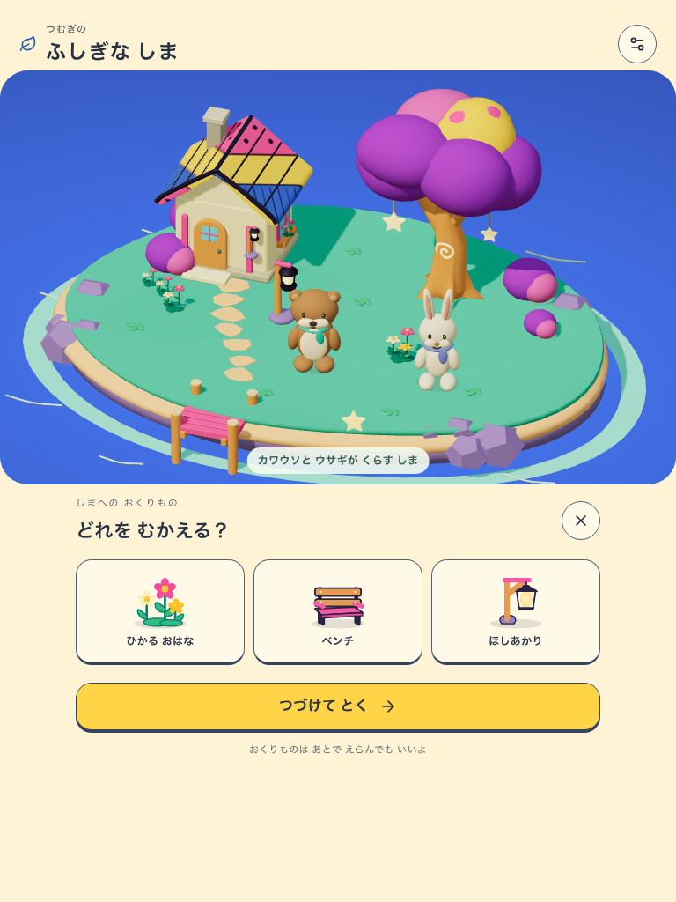
SHA256 ec57b2a6f04b1847fd581f886a08dc8e25e59a7f021467388900d415efbc7496
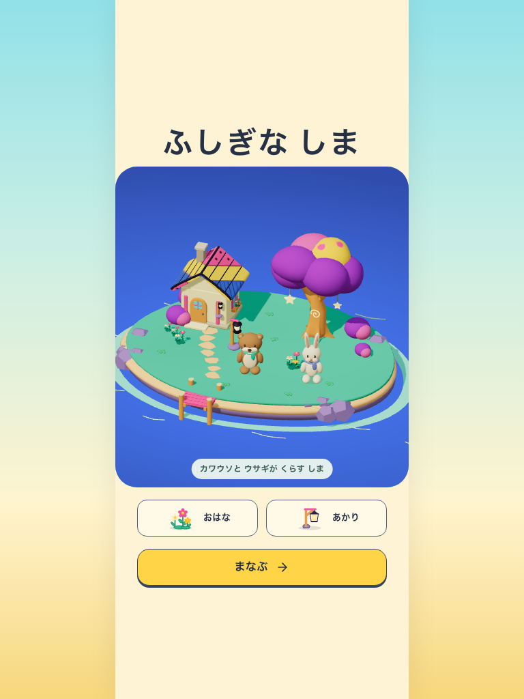
SHA256 8d40f097f1b32875c4e85368e4181fa869196b2ef350d55ab4a81626efa0cbfa